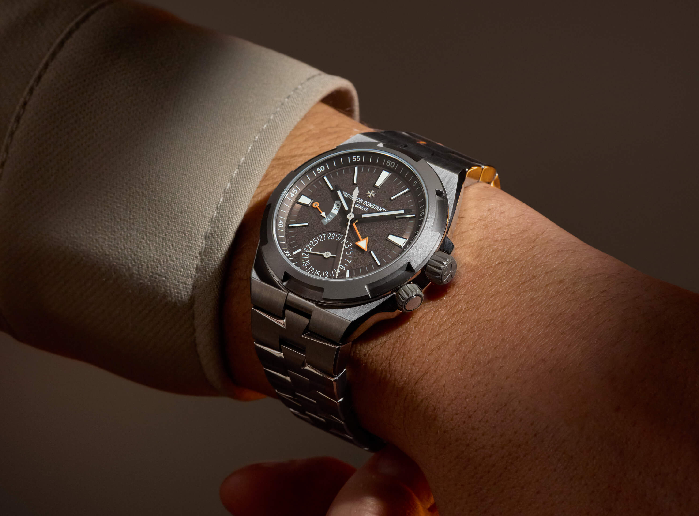
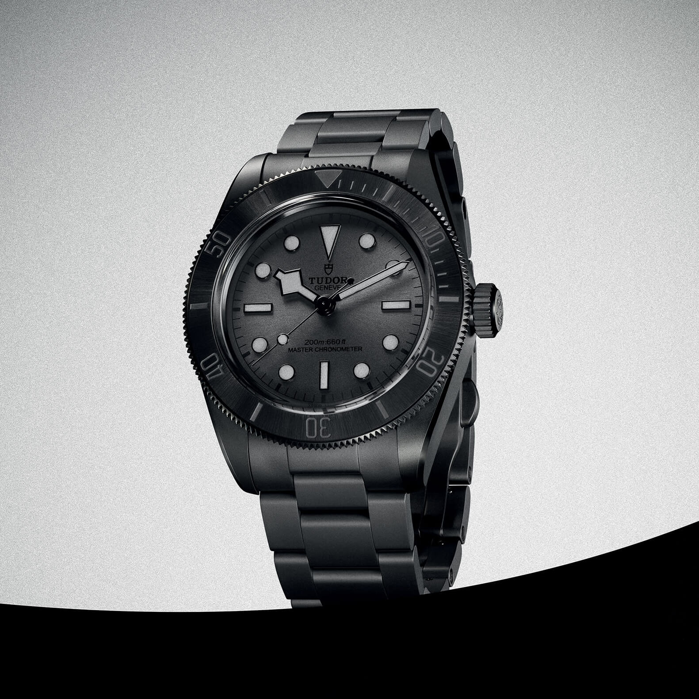
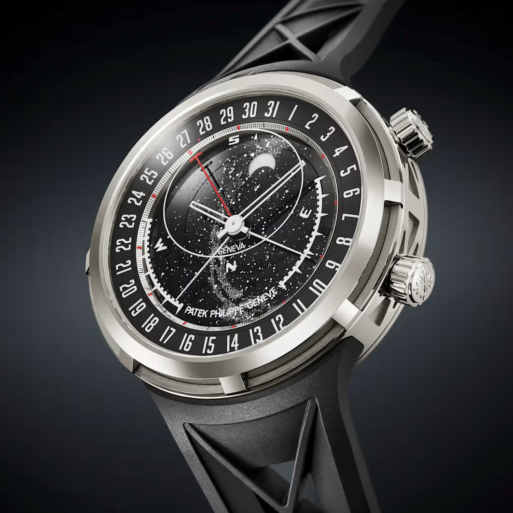
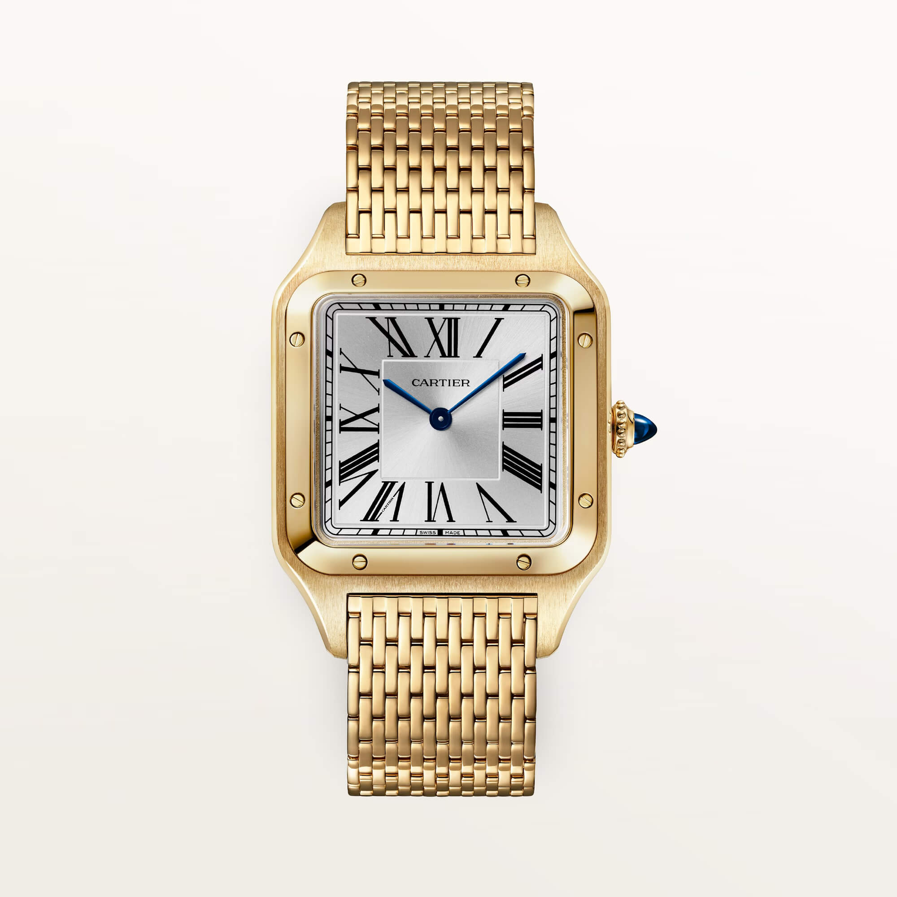
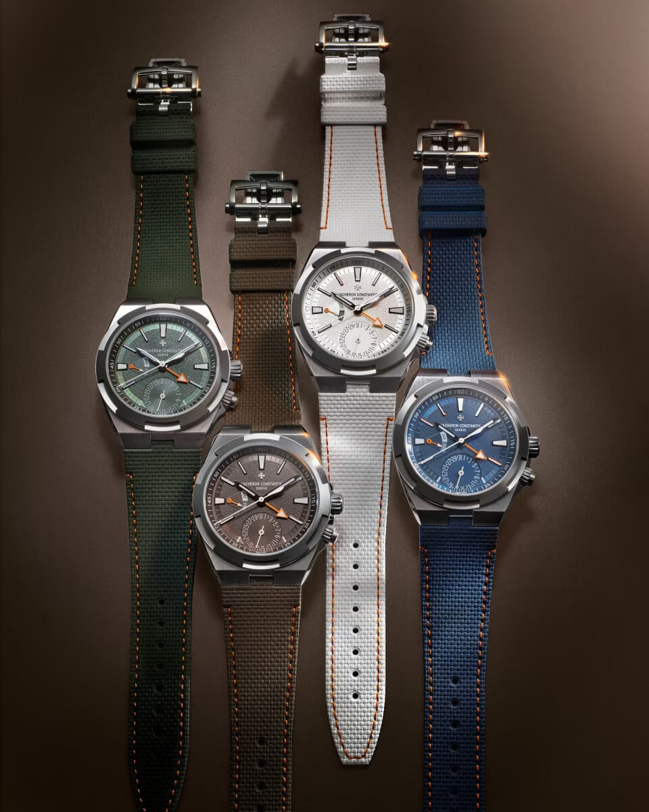
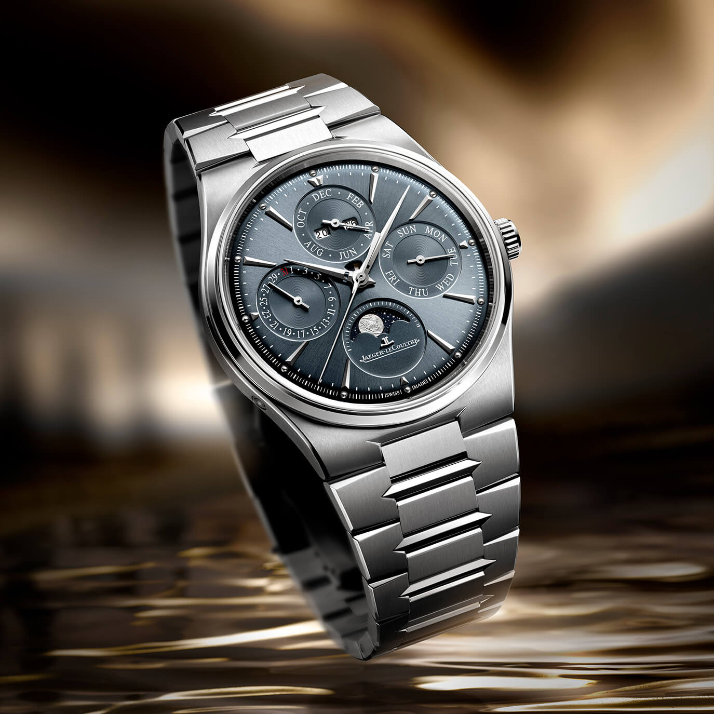
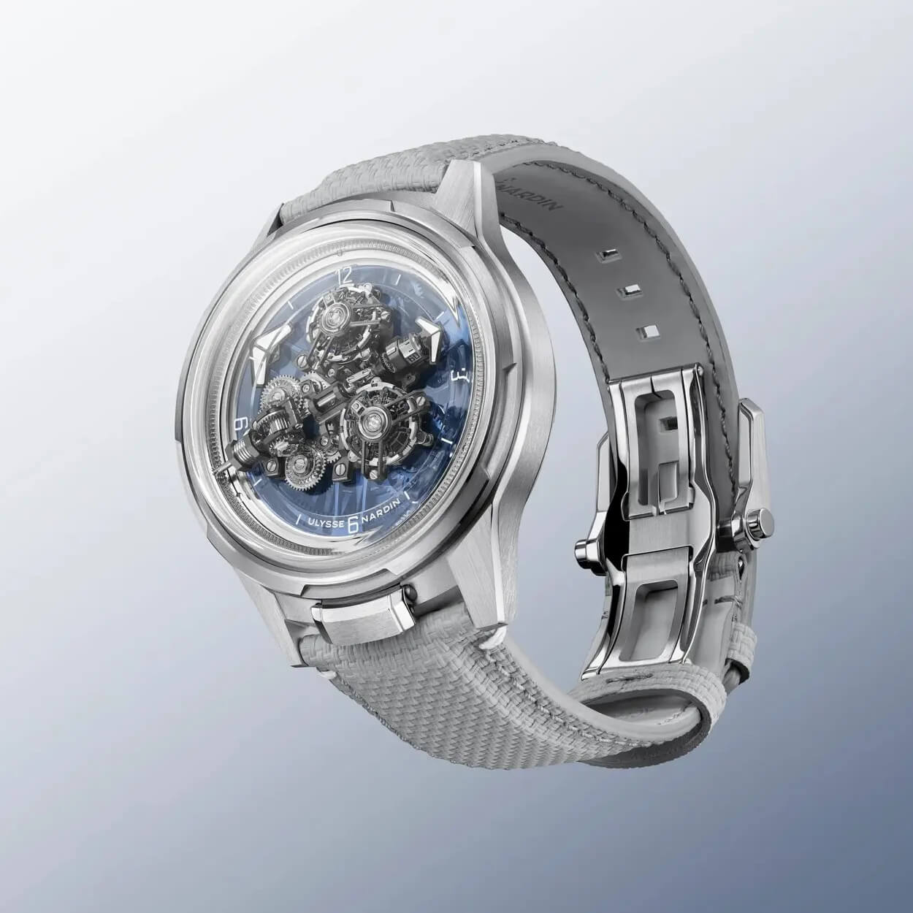
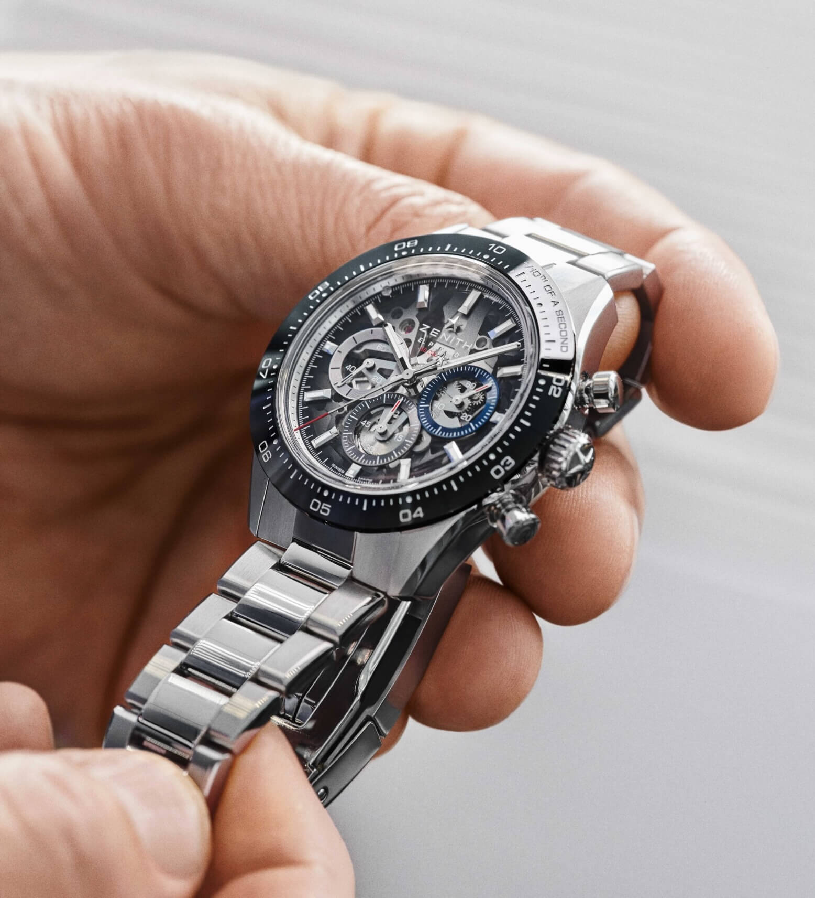

The Best Straps and Bracelets From Watches and Wonders 2026
Every spring I have this silly ritual. While the rest of the watch world loses mind over new watches, I sit down and do the thing nobody else seems to bother with: I track the straps and bracelets that the brands quietly paired with their Watches and Wonders releases.
 Nenad Pantelic • April 18, 2026
Nenad Pantelic • April 18, 2026

And I'm happy to report that 2026 was a strong year. Brands brought new materials, revived old bracelet designs, they even solved some issues that have annoyed us for years, and in a couple of cases made the strap the whole point of the watch.
Here are the seven releases that earned a spot on my list.
1. Tudor's first full ceramic bracelet
This one is quite impressive. Tudor has done a blacked-out Black Bay Ceramic before, but for 2026 they added the first fully ceramic bracelet in the entire Tudor catalogue. It's a three-link, Oyster-style design in matte black ceramic that matches the micro-blasted case, and depending on the light it shifts from true black to a charcoal grey.
The clasp is a dual push-button double-folding (butterfly) deployant with screwed links, and Tudor kept the ceramic ball bearings in the clasp mechanism that their steel bracelets use. Interestingly, they did not go with their T-fit on-the-fly adjustment here, presumably because of the engineering challenge of doing that in ceramic.
The overall package looks like no other bracelet on the market. It is stealthy, well balanced, and fits the blacked-out BB perfectly.

2. Patek Philippe 6105G Celestial
Patek calling a watch "modern" still feels strange to type, but the 6105G earns it. The 47mm white gold case is completely lugless, built around an X-shaped architecture, and the integrated black composite strap flows straight out of that X with a matching pattern. It's a vulcanised polymer strap rather than alligator, finished off with a patented triple-blade folding clasp in 18k white gold.
I find this fascinating because the strap isn't a choice you make after the watch is designed, it's integrated into the case geometry from the start.
You can't separate the two, and you wouldn't want to. For a brand whose comfort zone is calfskin, alligator, and a pin buckle, seeing a spaceship-grade composite strap as an architectural element on a CHF 350,000 grand complication is a big step forward.

3. Cartier Santos-Dumont and 394 links of liquid metal
If I had to crown a single bracelet of the show, it might be this. Cartier has spent years offering the Santos-Dumont almost exclusively on alligator, leaning into a very dressy character. For 2026 they fitted three Large Model references with a brand-new precious metal bracelet, and it completely changes the watch.
What is this bracelet? Exactly 394 individually machined links arranged across 15 rows, each link just 1.15mm thick. The result drapes like fabric. People keep reaching for "beads of rice" or "Milanese," but it's really neither, it's a little more regimented and squarer than both, drawn from Cartier's made-to-measure bracelets of the 1920s.

4. Vacheron Constantin Overseas Dual Time "Cardinal Points"
The Overseas already had the class-leading quick-change system, and the new titanium Cardinal Points collection shows exactly why. Each of the four cardinal-direction colorways (North, South, East, West) comes with three ways to wear it: the integrated titanium bracelet with the signature half-Maltese-cross links, an orange rubber strap with a Maltese-cross micro-motif, and a second rubber strap that matches the dial color with a woven, sailcloth-like texture and contrasting orange stitching.
So you get three completely different looks (if you are lucky enough to have an allocation for this watch), real versatility, and the ability to fine-tune the fit on your wrist, all without a spring-bar tool. Vacheron even makes the bracelet in Switzerland, which is no longer a given. As a strap system, this is the benchmark everyone else will be chasing in the years to come.

5. JLC's first real integrated bracelet
After decades of watching the Royal Oak, Nautilus, and Overseas define the integrated-bracelet category, Jaeger-LeCoultre finally built a proper one of their own. The Master Control Chronomètre line draws directly on the 1973 Master Mariner Chronomètre integrated design, but the execution is thoroughly modern.
The bracelet has somewhat of a three-link design, but each link is dressed with angular inlays said to echo the watch's sharp dauphine hands, and the polished notch of every link is mirrored by angular bevels along the links. Links run down into a double-folding clasp. The bracelet (or the watch) comes in steel (with a lovely blue-grey gradient dial) or pink gold. It's elegant rather than sporty, and I think that puts JLC in a conversation it has been sitting out for so many years.

6. Ulysse Nardin Super Freak (White Gold)
Leave it to Ulysse Nardin to make even the strap weird, in the best way. This 50-piece white gold Super Freak continues the experimental spirit the Freak has carried for 25 years, and the strap follows the idea. The Freak family pairs these watches with supple, textured fabric-effect straps and a DLC-coated titanium deployant buckle, and here it's done in a pale, technical, woven-look finish that suits the cooler white-gold-and-blue palette.
The detail I always point people to: on the Freak, the strap is mounted in reverse, with the buckle end sitting up at 6 o'clock. That's not a styling whim, it's there to clear the curved "FREAK" plaque between the lugs at six. It's the kind of quirk that reminds you they do whatever they feel like, right down to how the strap attaches.

7. Zenith Chronomaster Sport and the clasp that took three years
I'll be honest, any day of the year I would highlight the two-tone steel-and-rose-gold Chronomaster Sport with the mother-of-pearl dial. But it actually keeps the old clasp. The big news is the new steel Skeleton models that have Zenith's new patented folding clasp, the ZENCLASP™.
Zenith reportedly spent three years developing it, and it fixes a problem owners have complained about for years. The previous Chronomaster Sport clasp was secure but a nightmare to open. The new one has rounded edges and better articulation so it releases smoothly and confidently.
More importantly it adds tool-free, on-the-fly micro-adjustment: lift the polished center section from the rear and the extension slides in 2.5mm increments, five positions across a 10mm range, with ceramic-ball locking components keeping everything tight.
A clasp upgrade rarely steals the spotlight from a skeleton dial and an El Primero, but this one deserves to.

My takeaway
If there's a theme tying 2026 together, it's that the clasp finally got its moment. Tudor in ceramic, Vacheron's Easy-fit, Zenith's three-years-in-the-making ZENCLASP™, this was the year brands stopped treating the clasp as an afterthought. Add Cartier's liquid 394-link bracelet, JLC's overdue integrated debut, and Patek and Ulysse Nardin turning straps into hi-tech statements, and you've got the strongest Watches and Wonders in a while. As always, the watches will get the headlines. But you and I both know where the real action is. See you next year, same ritual.